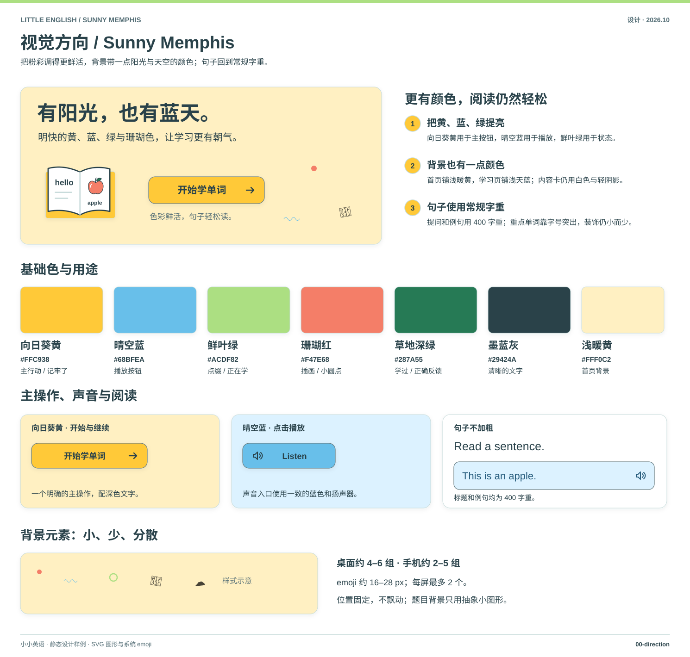
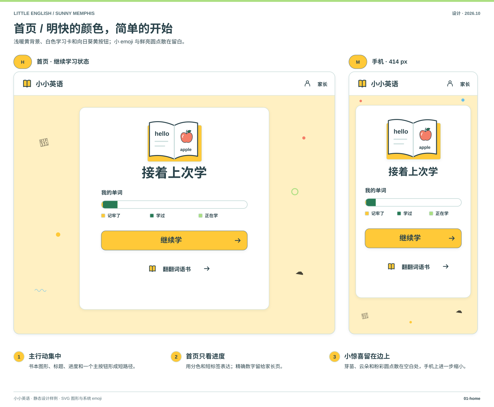
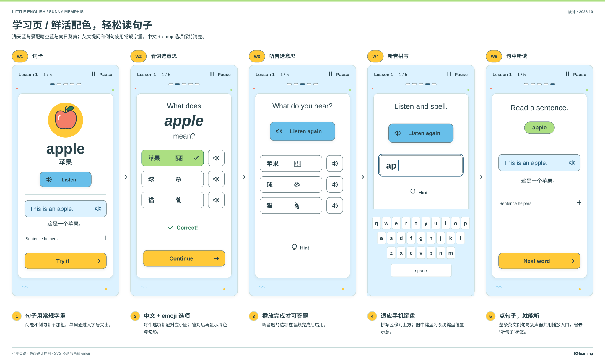
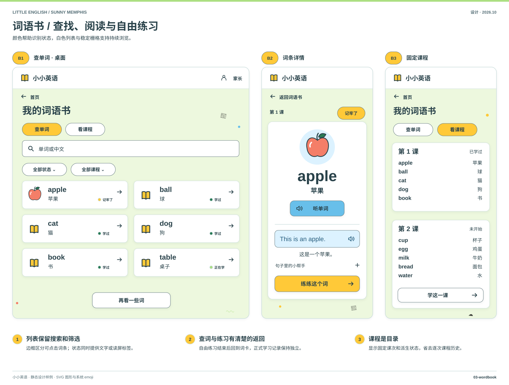
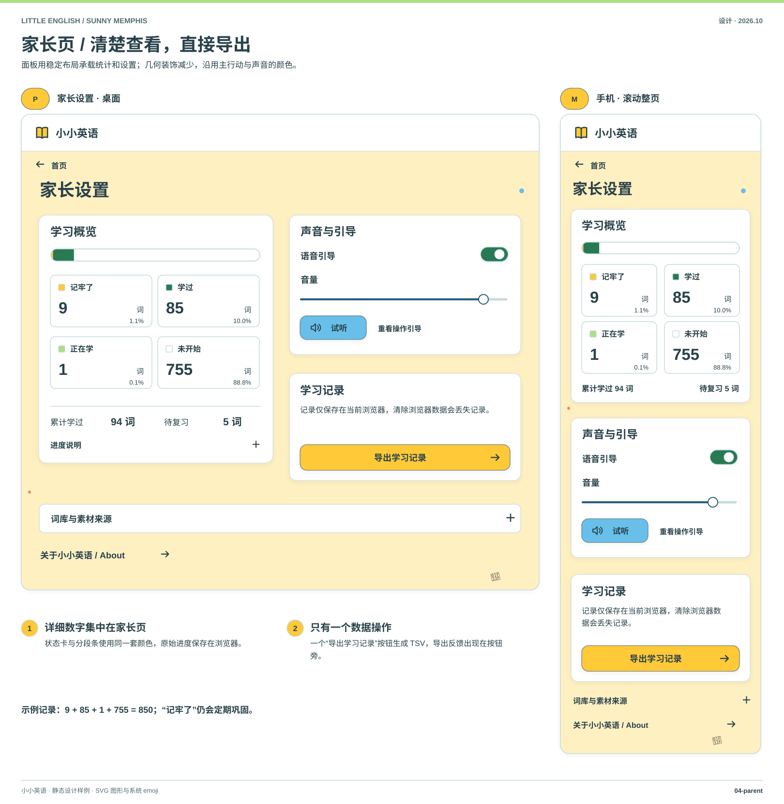
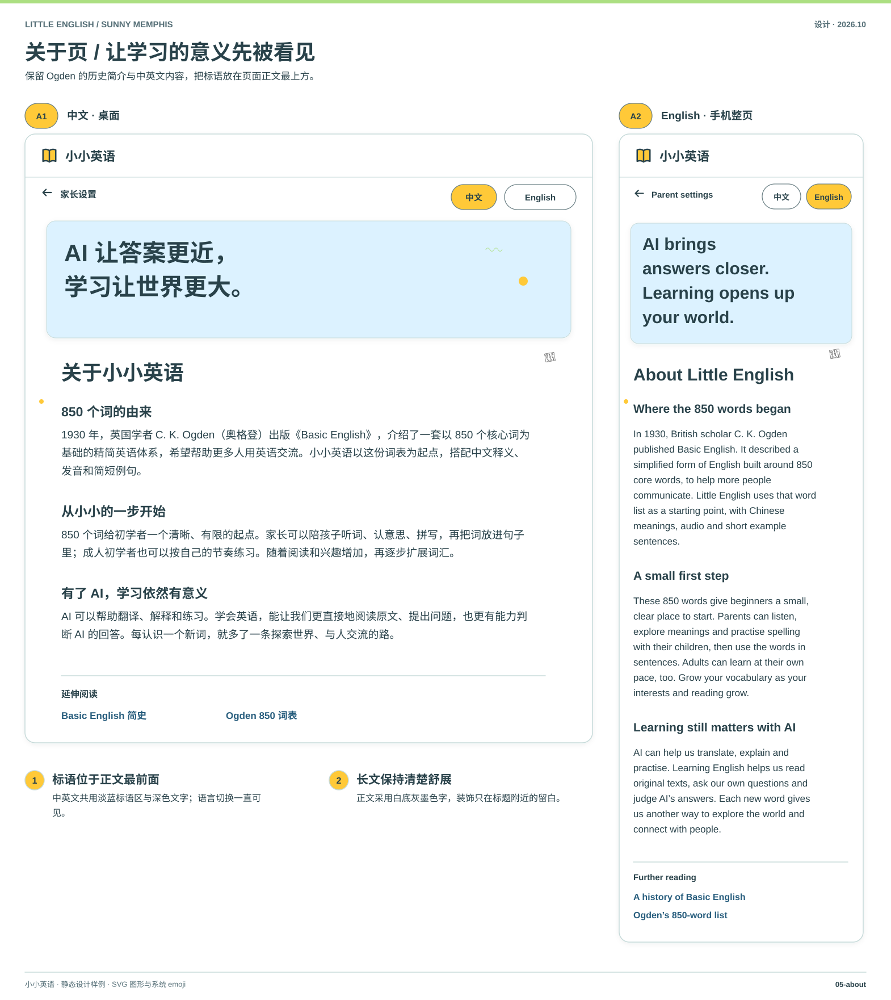
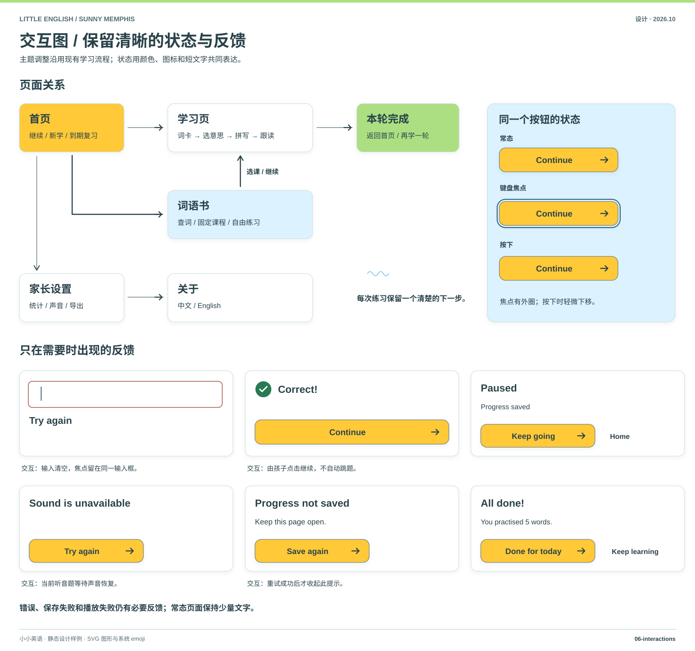
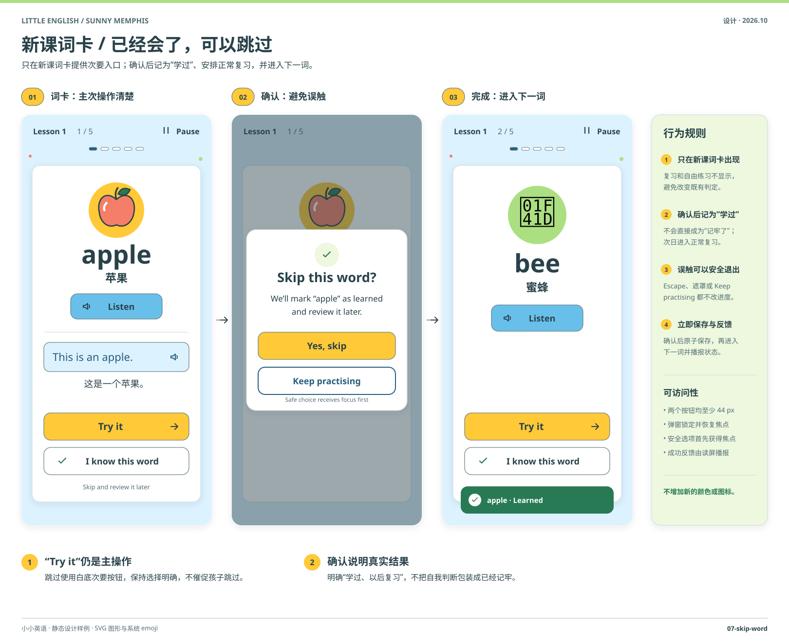
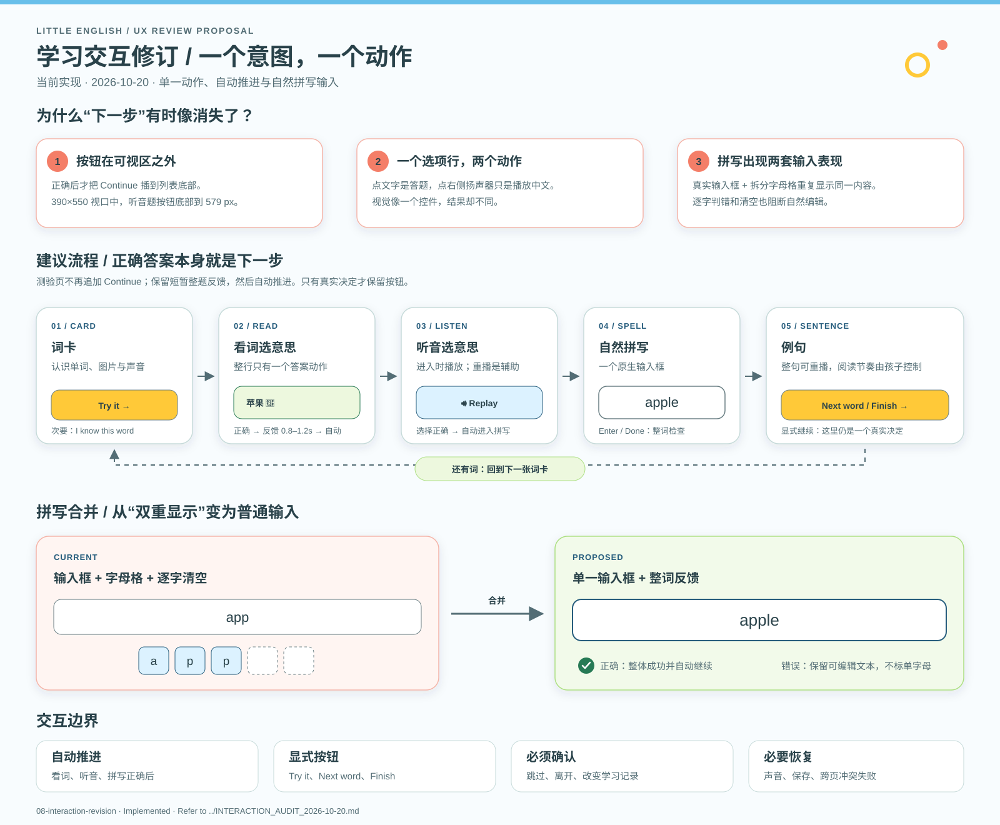

视觉方向 / Sunny Memphis
查看 SVG 原图 ↗把粉彩调得更鲜活，背景带一点阳光与天空的颜色；句子回到常规字重。

首页 / 明快的颜色，简单的开始
查看 SVG 原图 ↗浅暖黄背景、白色学习卡和向日葵黄按钮；小 emoji 与鲜亮圆点散在留白。

学习页 / 鲜活配色，轻松读句子
查看 SVG 原图 ↗浅天蓝背景配晴空蓝与向日葵黄；英文提问和例句使用常规字重，中文 + emoji 选项保持清楚。

词语书 / 查找、阅读与自由练习
查看 SVG 原图 ↗颜色帮助识别状态，白色列表与稳定栅格支持持续浏览。

家长页 / 清楚查看，直接导出
查看 SVG 原图 ↗面板用稳定布局承载统计和设置；几何装饰减少，沿用主行动与声音的颜色。

关于页 / 让学习的意义先被看见
查看 SVG 原图 ↗保留 Ogden 的历史简介与中英文内容，把标语放在页面正文最上方。

交互图 / 保留清晰的状态与反馈
查看 SVG 原图 ↗主题调整沿用现有学习流程；状态用颜色、图标和短文字共同表达。

已会单词跳过 / 快速继续，仍会复习
查看 SVG 原图 ↗新课词卡使用次要入口与确认弹窗；跳过后记为“学过”，不会直接成为“记牢了”。

学习交互修订 / 一个意图，一个动作
查看 SVG 原图 ↗单一答案动作、自动推进和自然整词拼写已进入当前产品；本图板取代 06 中旧的学习题交互。
